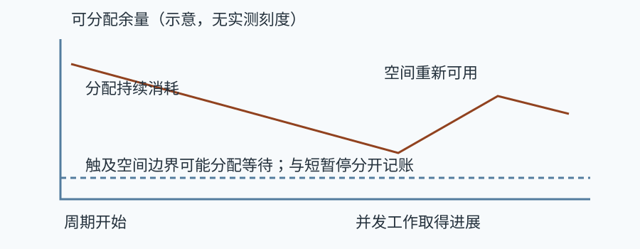

第五篇 · 垃圾收集与运行时协作
第23章 Z 垃圾收集器的分代与低延迟设计
对象已经搬走，应用怎样继续正确访问？它把引用状态、并发重定位与代际协议结合，缩短暂停，同时保留容量和资源成本。
本章基于 Java 开发工具包（Java Development Kit，JDK）25.0.5.0.2 与 HotSpot；垃圾收集（Garbage Collection，GC）的实现结论定位到固定 OpenJDK 提交，语言与类库语义单独注明。容量单位采用兆二进制字节（mebibyte，MiB）和千二进制字节（kibibyte，KiB）。前置为对象、分配和执行引擎；源码阅读、运行说明与证据索引相互对应。
23.1 设计目标与分代结构
23.1.1 缩短暂停，把大量工作并发化
Z Garbage Collector（ZGC）旨在将主要对象追踪与移动工作放到并发阶段，通过较短暂停建立必要边界。低暂停目标不等于应用没有分配等待，更不等于业务尾延迟恒定；并发工作还消耗处理器、内存带宽及额外堆余量。
本书JDK 25的ZGC是分代实现。不要继续要求旧版的ZGenerational选择，也不能把早期非分代着色指针示意原样复制到当前版本。版本移除记录与固定zGeneration.cpp中的年轻／老代路径共同界定这里的范围。
23.1.2 年轻代与老年代分开观察
日志以年轻代（Young，Y）和老年代（Old，O）标识相关代际活动；Minor Collection侧重年轻代，Major Collection涉及老代协调及相应年轻代工作。对象晋升改变代际归属，整体堆已用可能没有同比例下降，所以只读一行总容量不能判断哪一代完成了什么工作。
示例建立12 MiB长期载荷、保留2 MiB最近对象，中间释放一半长期持有并再次请求收集。年轻代、晋升与老代记录应沿GC编号解释；本次显式请求也会改变正常触发节奏，不能据此推断生产系统默认周期长度。
23.2 着色指针与屏障分工
23.2.1 引用携带状态，不把颜色画进对象头
堆中的着色引用将地址编码与标记、记忆及重映射等状态组合。应用使用引用时由协议得到可访问地址；颜色描述该引用在当前周期中的处理状态，不是对象的业务颜色，也不是把同样字段放进每个对象头。
固定更新版zAddress.hpp记录低阶元数据及架构处理差异。下图表达逻辑组成，不给出通用物理地址位数；不能照旧版高位着色图去解读本机AArch64实际引用。
23.2.2 加载与存储各承担什么
加载屏障检查引用是否满足当前加载状态并在必要时修复位置／编码，使读取者获得可用对象地址。存储屏障则结合旧引用状态承担标记和跨代记录等工作；快路径检查不能满足时进入对应慢路径。固定实现的load_barrier_on_oop_field_preloaded与store_barrier_on_heap_oop_field清楚分开两个入口。
这不是每次引用读写都执行全部慢路径；状态位和阶段变化让多数访问可走较短路径。跨代记忆结构记录相关引用槽及处理状态，不能直接称为前章的区域卡集合。第20章的内存排序职责仍须独立判断。
23.3 标记、重定位与修复
23.3.1 从标记到重定位集合
年轻代路径先Pause Mark Start，再并发标记；Pause Mark End可能因需要补充工作而与Concurrent Mark Continue循环。标记收尾后重置旧重定位集合、选择新集合，Pause Relocate Start切换阶段，再并发重定位。短暂停是阶段边界，周期包含它们之间的并发工作。
重定位集合依据存活和可回收收益选择，不意味着整个堆每轮都移动。转移对象须取得目标空间，旧位置到新位置的映射使稍后访问仍可定位同一逻辑对象。


23.3.2 转发表、根与访问修复
转发结构保留旧对象位置到新位置的关系；访问屏障或并发重定位者依协议完成必要移动与修复。对引用槽的自修复让后续访问更可能走快路径，相关竞争必须保证对象身份和字段值的正确性。
根处理与线程栈协作不是被颜色位取消了。第20章的安全遍历和引用位置规则仍须满足，只是不同工作可以在不同阶段完成。日志支持阶段发生，不能从一条Concurrent Relocate行推导某个具体Java对象的真实地址已经被测量。
23.4 代际回收协调
23.4.1 跨代入口与晋升
年轻代收集只关注自身范围时，老到年轻的持有关系必须成为额外入口。存储屏障和记忆集维护避免每次年轻代回收都重新扫描全部老代。对象达到晋升条件后，代际及引用状态也必须进入新的规则，不能只移动载荷而忘记其引用槽。
本次GC(1)年轻代记录了晋升量，随后老代仍保有长期对象；第二次请求发生在释放一半持有之后。晋升日志按收集器单位显示，不能把近似M值与精确12 MiB数组载荷逐字节相等。

23.4.2 老代工作不独立于年轻分配
年轻代大小和回收启动会受分配速度、存活与历史进度影响；老代并发工作占用资源，也可能与年轻代活动协调。晋升提高老代存活压力，而老代空间未及时恢复又会压缩年轻代及转移预算。
因此同一Major编号中可能出现多段年轻代阶段与老代阶段。汇总时应保留周期起止及代际标识，不以本轮最短的Pause Mark Start代表“ZGC完成了一次回收”。
23.5 分配停顿与空间余量
23.5.1 把分配和回收放在同一时间轴
应用创建对象消耗可分配空间，并发工作逐渐使空间恢复可用；若后者尚未完成而前者先耗尽余量，分配线程可能等待。暂停很短与分配持续等待可以同时成立，因为它们属于不同计时边界。
示例的每批固定4 MiB载荷、休眠20毫秒是展示窗口。日志保留各阶段最大堆、已提交、已用及收集器Free／Used表；分配计数只含数组载荷，类库与对象头开销未计入。下图为关系示意，不冒充本次实际余量曲线。

23.5.2 容量推理与观察限制
本次阶段0的96 MiB载荷发生在uptime 71—714毫秒，阶段1发生在717—1327毫秒，对应窗口平均约149和157 MiB每秒。这是包含休眠、回收请求、日志及启动影响的阶段派生量，不是纯分配吞吐，也不能拿来给其他收集器排名。
记录中的Allocation Stalls为0，只支持这个短窗口没有记录到分配停顿；末阶段已用堆约110 MiB也不等于110 MiB存活。容量规划须同时考虑瞬时分配、可回收但尚未完成的空间、存活和重定位预留；不能只看最短暂停或平均已用堆。
观察与解释边界
CH23-E01在固定128 MiB堆、两个可见处理器、两个并行及一个并发工作者下正常结束。实际周期为Major，包含Y／O、标记、重定位与晋升；窗口未记录Minor周期，汇总时长为0.000，未据此声称本轮执行了Minor周期；分配停顿记录为0。阶段应用账本和收集器表按启动时间轴关联，未进行业务延迟测量。
只有macOS AArch64与当前发行版已实测；分配停顿没有被故意制造，没有性能排名或业务尾延迟保证；当前数据不足以确定其他负载的最小安全堆容量。
来源与回顾
- CH23-S01 分代阶段实现：ZGenerationYoung::collect；ZGenerationOld；标记与重定位阶段、代际协调。
- CH23-S02 引用编码：zpointer布局与ZPointer相关掩码；固定更新版编码及架构差异。
- CH23-S03 屏障实现：load_barrier_on_oop_field_preloaded；store_barrier_on_heap_oop_field；加载修复、存储及记忆状态。
- CH23-S04 转发实现：ZForwarding；旧位置与新位置映射。
- CH23-S05 版本参数处理：ZGenerational版本废弃／过时表；不要求已移除的非分代选择。
源码固定提交：1775ea114f649f0314e4e43eb6c802ff16dfab7c。实现定位和完整命令见证据索引及运行记录；插图表达机制，没有填入推测的时间或地址。
回顾：先确定哪些引用或状态必须保留，再看工作在哪里执行、消耗哪些资源。思考：Major周期内的Y和O分别完成什么？为什么短Pause Mark Start与分配停顿可以同时存在？哪个字段属于引用编码而不属于对象头？